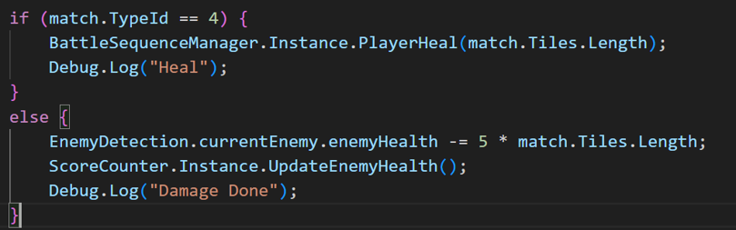

Match-3 Battle
Full Gameplay
Pre-Production
In the sector of mobile games in the games industry, it is majoritively saturated with casual games, due to the nature of mobile games being easy to load and access and are able to be played anywhere. Mobile phones are the most widely owned piece of tech thougout the whole world, meaning that the platform of mobile games have a very large audience to tap into. As mobile games are limited to the hardware of mobile phones, mobile games are lightweight which make them be dependent on being optimised. The Unity Game Engine is best suited for developing mobile games as it is widely used for prototyping and making lightweight projects.
During my brainstorming of the game we will be making for this mini module. I wanted to make a
game that did not seem too ‘mass produced’ such as many games that populate the apps store when I
inspected what sort of games that are there.
I thought about the most popular genres of mobile games which my mind immediately went to Candy
Crush by King. This game is a large player in the match 3 mobile game space with players from
multiple different backgrounds. Audiences from many ages ranging from the elderly to children pick
up this game as an easy form of entertainment right on their phones. This shows that this game and
it’s wider franchise is very effective in maximising the amount of players it can cultivate out of
the mobile games market.

To add a bit of nuance the concept of a match 3 game, instead of having levels the match 3 board will be triggered when the player goes into battle with an enemy and the matches would either do damage to the enemy or heals the player.
Our team for this project compiled a combat design document to fully realise our idea for the combat flow.
Process and Development
Base Match 3 Mechanic
I was a programmer in this team developing this game, I was in charge with making the mechanics in order for there to be functionality in this game. The main mechanic I was focused on making was the match 3 mechanic. I first look up a tutoial to make the match 3 board and then from there added the additional functionality.
After the I finished following the tutorial there were a major bug that the tiles that were matched popped all of the matching tiles it was connected to instead of just 3 or 4 in straight lines instead of in L shapes.
Damage and Health Matches
After fixing that bug from the base match 3 mechanic, I went on to set the values of the tiles.
The tiles that did damage would do 5 damage per tile, so when they are matched, they would do
15-30 damage to the enemy when matched.

When ‘Heal’ tiles get matched, the player will heal by the 10 per matched tile.
Limited Moves Within Turns
To make this a proper damage sequence, I made it so that the player can only do 3 move per turn.
After each turn, if the current enemy’s health isn’t fully depleted, the enemy would do damage to
the player.
Turn counters at the corner of the screen to tell the player how many moves they have left in the turn.

Battle Stage
When the player encounters an enemy, the match 3 board would show in the canter of the screen. This would leave empty spaces on the sides of the board. I decided to have the player and the current enemy on either side of the board.
I achieved this by setting a position a set amount of distance away from the enemy to make the space for the board.
This make it so that when the player goes into the battle sequence, the player would teleport to that position until the battle ends and the player teleports back to where it was prior to the battle.
By the end of this process this was what the battle stage looked like whenever the player would enter battle with an encountered enemy.